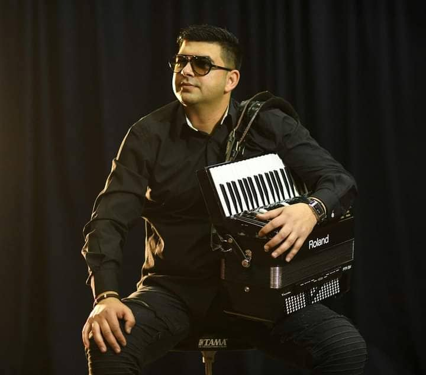

Biografija Frontmen-a Peka Orchestra

Dragan Krstic-Peka je naš najpoznatiji harmonikaš,kompozitor,aranžer i muzicki producent...Rodjen 1986g na jugu Srbije sa boravištem u Vladičinom Hanu.Frontmen PEKA-ORCHESTRA,radio je i saradjivao sa brojnim svetskim i poznatim imenima sirom Evrope i Srbije.Njegovi aranžmani i njegova muzika se često mogu čuti na poznatijim albumima naših estradnih i svetskih zvezda ali takodje i na svetskom Saboru trubaca u Guci.Zvani PROFESOR,jedan je od pojedinaca koji vec 16.godina saradjuje sa skoro svim trubačkim orkestrima u Srbiji,pravivši im kvalitetne aranžmane,takodje jedan od najuspešnijih aranžera u tom poslu!Najveći uspesi su mu brojna priznanja i brojne prve nagrade njegovih kolega kao i potraživaca,što samo dokazuje o kakvom kvalitetnom radu se govori.Više puta je i sam bio učesnik programa u Guči sa brojnim našim najpoznatijim orkestrima,radio i saradjivao sa poznatim bugarskim umetnicima i KUD-om FILIP KUTEV.
Učestvovao je u brojnim mizičkim manifestacijama,pozorištima,koncertnim dvoranama,klubovima i raznim svetskim scenama širom Amerike,Kanade i Meksika i bio član legendarnog i najistaknutijeg trubačkog orkestra Bobana Markovica punih 7.godina.
O ORKESTRU:
Noseći se ogromnim iskustvom Dragan Krstić-Peka 2019.god sam osniva
svoj trubački orkestar pod nazivom PEKA-ORCHESTRA koji broji
9-clanova i takodje je prvi harmonikaš kao frontmen jednog trubackog
orkestra u Srbiji.Sam orkestar se daleko razlikuje od ostalih
trubačkih orkestara po kvalitetu i brojnim repertoarom.Brojne
odsvirane svadbe,koncerti i na stotine zadovoljnih mušterija širom
naše zemlje kao i Evrope samo dokazuju o kakvom profesionalnom
orkestru je reč.
Odlika orkestra je originalno izvodjenje pesama,dolazak na odredište u tačno vreme,afirmisan kao i kvalitetno uniformisan orkestar.Popularnost PEKA-ORCHESTRA porasla je sviranjem po Arenama u susednoj Bugarskoj sa istaknutijim umetničkim ansamblom Kamen Donev,kao i sa svim njihovim muzičkim zvezdama.Saradnja,medjusobna gostovanja i druženje sa svim svetskim muzičarima,doprinela je slavi i velikoj reputaciji ovog orkestra.Izmedju brojnih njihovih pesama i nastupa koje možete čuti i videti na YOUTUBE - u,orkestar planira svoj debi album koji je u pripremi i koji će se sigurno naci na našem i stranom tržistu tokom ove ili pocetkom sledece godine.
Hvala na poseti